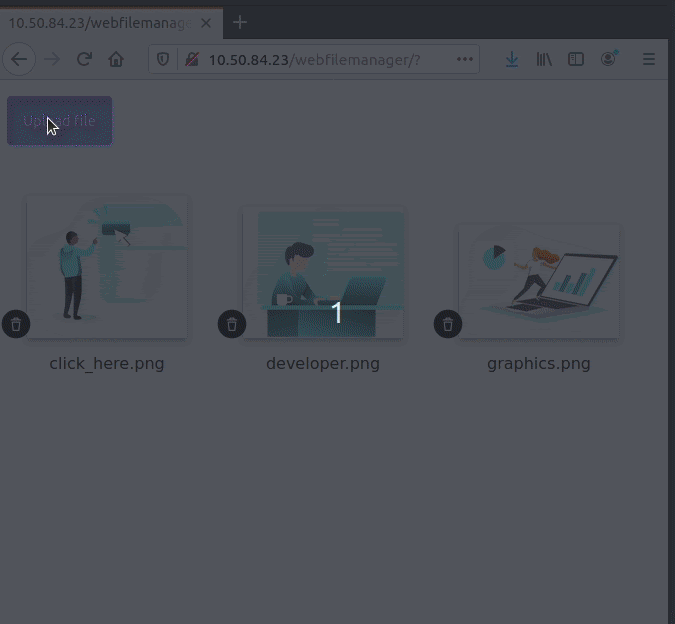

lxc launch ubuntu:20.04 mywebfilemanager
lxc exec mywebfilemanager bash
Instal·la els paquets necessaris
apt update apt install apache2 php
<form id="upload-form" enctype="multipart/form-data" action="index.php" method="POST"> <input id="file" name="userfile" type="file" onchange="document.getElementById('upload-form').submit()"/> </form> <?php $uploaddir = 'uploads/'; $uploadfile = $uploaddir . basename($_FILES['userfile']['name']); move_uploaded_file($_FILES['userfile']['tmp_name'], $uploadfile); ?>
<?php if ($handle = opendir($uploaddir)) { while (($file = readdir($handle)) !== false) { if ($file != "." && $file != "..") { echo "<p>$file</p>"; } } closedir($handle); } ?>
if(isset($_GET['delete'])){ unlink($uploaddir . $_GET['delete']); }